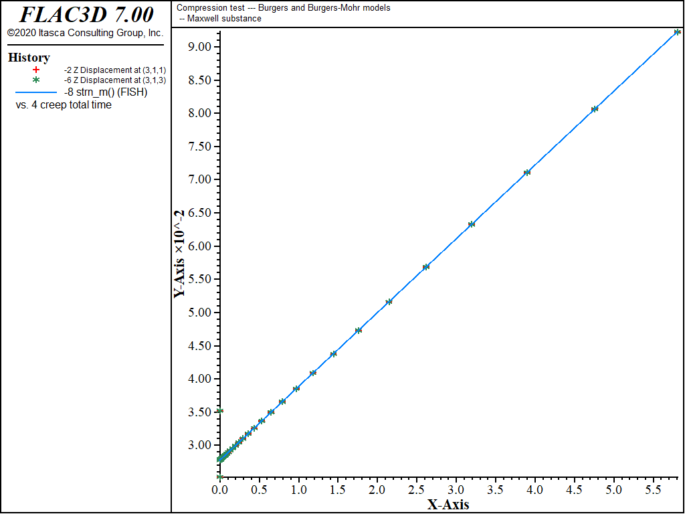
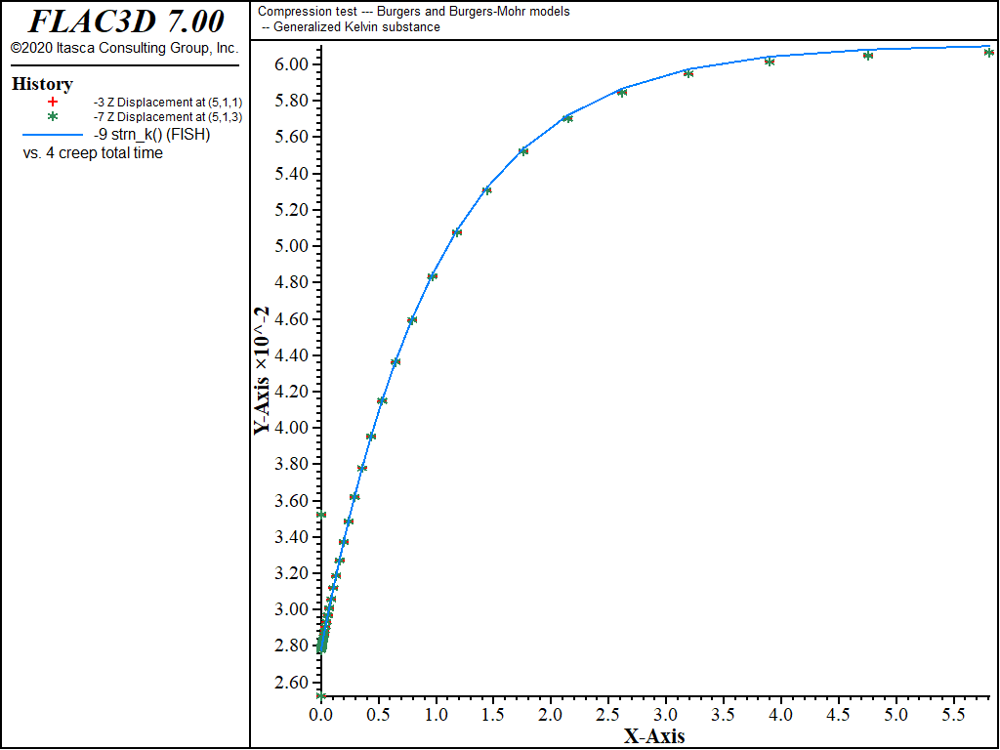
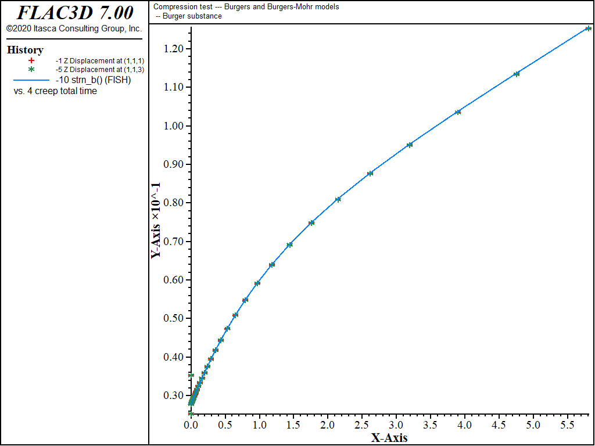

Maxwell/Burgers 模型：压缩试验
注意
要在 FLAC3D 中查看此项目，请使用菜单命令 。 选择“Creep/CompressionClassical”并选择“CompressionClassical.f3dprj”以加载。 该项目的主数据文件见本示例末尾（main data files）。
本示例比较了对 马克斯韦尔模型（Maxwell）、广义 Kelvin 和 伯格斯模型（Burgers） 物质进行无侧限压缩试验的数值解与解析解。 忽略 Maxwell 黏性的 伯格斯模型（Burgers） 物质即广义 Kelvin 物质。恒定荷载 \(P\) 下的轴向应变解为
分别对应于 Maxwell、广义 Kelvin 和 Burgers 物质。在这些公式中，\(K\) 为体积模量，\(G\) 为剪切模量，\(\eta\) 为黏度，\(\alpha = G^K / \eta^K\)。
数值模拟在六个试样上进行，每个试样由一个网格单元表示。 每种物质都同时使用 Burgers 模型（Burgers model） 和 Burgers-Mohr 模型（Burgers-Mohr model） 建模。将黏聚力特性设为很高的值，以防止 触发 Burgers-Mohr 模型（Burgers-Mohr model） 的塑性逻辑。要模拟 Maxwell （或广义 Kelvin）物质，只需忽略模型中的 Kelvin（或 Maxwell）黏性特性。 一旦获得弹性响应（短时响应），就在进入模拟的黏性阶段之前 将速度重置为零。
轴向应变随时间变化的图（图 1（Figure 1） 至 图 3（Figure 3））显示了瞬时弹性响应，随后是 物质对恒定施加荷载的特征蠕变响应：Maxwell 物质的蠕变速率恒定， 广义 Kelvin 物质的蠕变速率按指数衰减， 而 Kelvin 物质同时表现出瞬态蠕变和稳态蠕变。


图 1：竖向应变与时间的关系——Maxwell 物质。


图 2：竖向应变与时间的关系——广义 Kelvin 物质。


图 3：竖向应变与时间的关系——Burgers 物质。
数据文件
;------------------------------------------------------------
; 压缩试验——Burgers 与 Burgers-Mohr 模型
;-------------------------------------------------------------------
model new
model large-strain off
fish automatic-create off
model title "Compression test --- Burgers and Burgers-Mohr models"
model configure creep
;
zone create brick size 5 1 3
program call 'parameter'
[setup]
zone cmodel burgers range id-list 1 3 5
zone cmodel burgers-mohr range id-list 11 13 15
zone cmodel assign null range id-list 2 4 6 7 8 9 10 12 14
zone property cohesion 1e20 tension 1e20 range id-list 11 13 15
;
zone face apply velocity-z 0 range union position-z 0 position-z 2
zone face apply stress-zz [P] range union position-z 1 position-z 3
;
zone history displacement-z position 1,1,1
zone history displacement-z position 3,1,1
zone history displacement-z position 5,1,1
model history creep time-total
zone history displacement-z position 1 1 3
zone history displacement-z position 3 1 3
zone history displacement-z position 5 1 3
fish history strn_m
fish history strn_k
fish history strn_b
; Burgers 体
zone property bulk [bu] shear-maxwell [g_m] viscosity-maxwell [vis_m] ...
shear-kelvin [g_k] viscosity-kelvin [vis_k] range id-list 1 11
; Maxwell 体
zone property bulk [bu] shear-maxwell [g_m] viscosity-maxwell [vis_m] ...
range id-list 3 13
; 广义 Kelvin 体
zone property bulk [bu] shear-maxwell [g_m] shear-kelvin [g_k] ...
viscosity-kelvin [vis_k] range id-list 5 15
; --- 初始“瞬时”平衡 ---
model solve
; --- 重置速度 ---
zone gridpoint initialize velocity (0,0,0)
; --- 蠕变试验 ---
model creep timestep starting 1e-5
model creep timestep automatic
model creep timestep minimum 1e-5
model creep timestep maximum 0.1
model solve time-total 6.
model save 'compression'
⇐ Kelvin Model: Oedometer Test | Burgers-Mohr/Power-Mohr Model: Loading/Unloading Compression Test ⇒
| 这些内容对您有帮助吗？… 版权与免责声明 | FLAC3D © 2019, Itasca | 原文更新于 2020 年 10 月 8 日 |